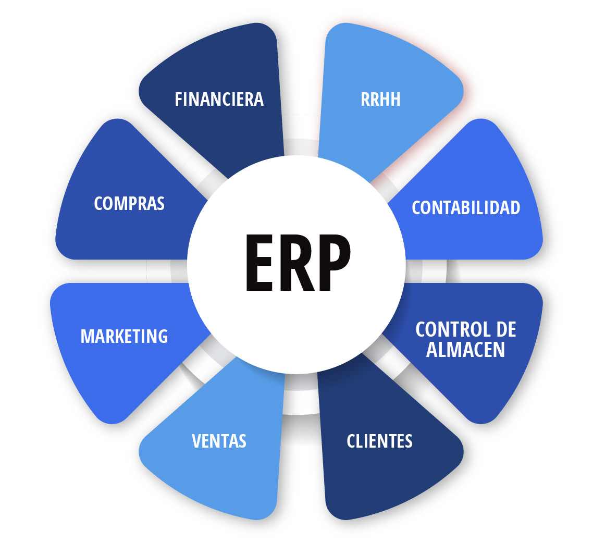
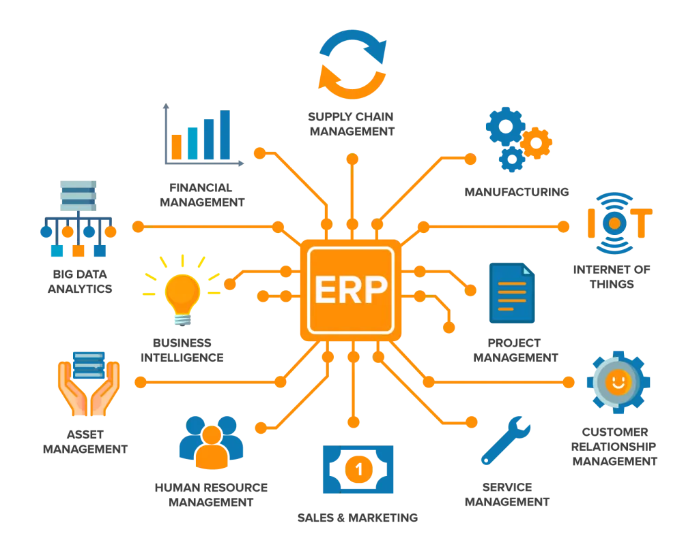

Introducción a los ERP
Bienvenido al sitio web sobre ERP. Aquí encontrarás información detallada sobre los sistemas ERP, incluyendo su teoría y una comparativa de los principales productos del mercado.
-
Teoría ERP:
- ¿Qué es un ERP?: Descubre qué significa ERP y cómo funciona como una base de datos centralizada que conecta todos los departamentos de una empresa.
- ¿Para qué sirve?: Aprende cómo un ERP facilita la comunicación y el flujo de información entre diferentes áreas de una empresa.
- ¿Qué funciones realizan?: Conoce las principales funciones de un ERP, como la gestión de finanzas, recursos humanos, producción, logística y ventas.
- ¿Qué tipos de módulos hay?: Explora los diferentes módulos que ofrecen los ERP, como finanzas, recursos humanos, CRM, e-commerce, entre otros.
- Clasificación de módulos: Aprende cómo se clasifican los módulos según su función empresarial, nivel de integración, industria y modelo de despliegue.
- Compatibilidad de módulos: Descubre por qué es importante verificar la compatibilidad de los módulos con tu sistema ERP.
- ¿Qué es la integración de módulos?: Entiende cómo la integración de módulos mejora la eficiencia y facilita la toma de decisiones.
-
Comparativa ERP:
- Análisis de productos: Compara los principales sistemas ERP como SAP, Microsoft Dynamics y Odoo.
- Características y funcionalidades: Descubre qué ofrece cada sistema ERP en términos de módulos y personalización.
- Requisitos: Conoce los requisitos técnicos de cada ERP, como hardware y software necesarios.
- Orientación al mercado: Aprende a qué sectores están dirigidos estos sistemas ERP.
- Licencias y precios: Analiza los costos y tipos de licencias disponibles para cada ERP.
- Tabla comparativa: Consulta una tabla que resume las principales diferencias entre SAP, Microsoft Dynamics y Odoo.

